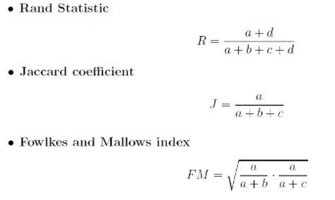
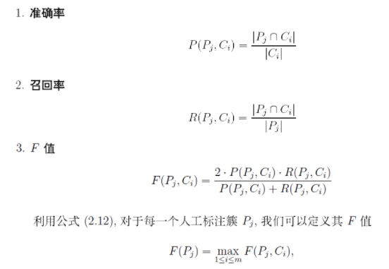
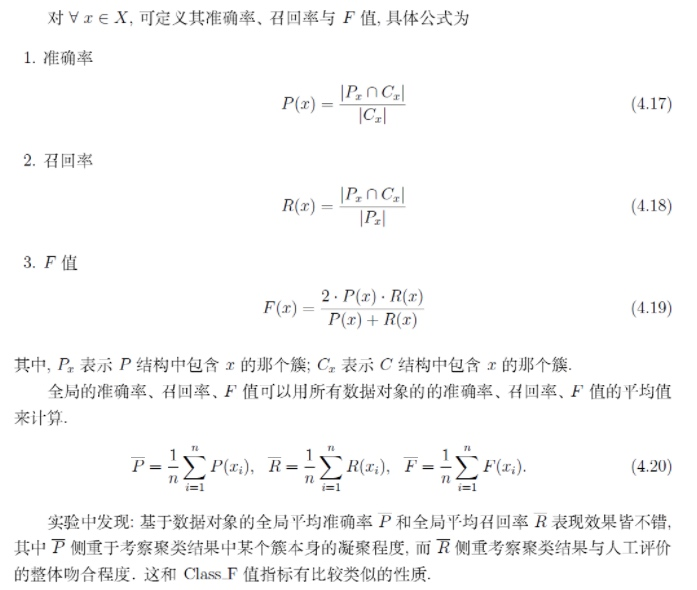

所属 Topic：机器学习 · 类型：方法
聚类效果评价#
从整体上来看，根据真实标签是否已知，聚类效果评估可以分为两大类：
* 外部标准：即基于人工的判断，需要有个标注集合
* 内部标准：基于类内和类间聚类的目标函数的判断
1 内部标准#
官方文档 https://scikit-learn.org/stable/modules/clustering.html#clustering-performance-evaluation
轮廓系数#
轮廓系数的计算方法: \frac{b-a}{max(a,b)}
对每个样本来说：a=与他同类别样本的平均距离, b=与他距离最近的不同类别中样本的平均距离。
属性： 范围[-1,1]， 越大越好
import numpy as np
from sklearn.cluster import KMeans
kmeans_model = KMeans(n_clusters=3, random_state=1).fit(X)
labels = kmeans_model.labels_
metrics.silhouette_score(X, labels, metric='euclidean')
CH准则#
计算速度要比轮廓系数快
$s(k) = \frac{tr(Bk)/(k-1)}{tr(W_k)/(n-k)}$
其中Bk是类别间的协方差矩阵，Wk是类别内部的协方差矩阵。最后是希望类别间越大，类内越小越好。
即CH值越大越好
metrics.calinski_harabaz_score(X, labels)
在选择最优的k时候，因为每个k都要再计算一次，当样本量比较大的时候比较费时间，这个时候可以选用MiniBatchKMeans
ch_list = []
lunkuo_list = []
for i in num_list:
# model = KMeans(n_clusters = i,random_state=123).fit(df)
model = MiniBatchKMeans(n_clusters = i,random_state=123).fit(df)
ch = calinski_harabasz_score(df, model.labels_) # CH 准则
ch_list.append(ch)
lunkuo = silhouette_score(df, model.labels_) # 轮廓系数
lunkuo_list.append(lunkuo)
print(ch_list,lunkuo_list )
2 外部标准#
假设：
机器判断的类别集合是：C=\{C_1,C_2,...C_m\}
人工判断的类别集合是：P=\{P_1,P_2,...P_s\}
1.1混淆矩阵#
基于数据样本点的角度：
对于任意两个数据pair，(x_i,x_j)按照其在C和P中是否属于同一个簇，可以构造出混淆矩阵
| P_1 | p_0 | |
|---|---|---|
| C_1 | a | b |
| C_0 | c | d |

1.2簇的准确率/召回率#
基于簇pair的，考虑对任意一个人工与机器的.P_j,C_i。对于每一个人工标注的P_j,在机器标注中应该都会对应一个"最相关的"。可以遍历C中所有的cluster，分别计算准确率，召回率，F_score。

然后对于所有簇的F值做加权平均
$ClassF=\sum w_j F(p_j), w_i=n_j/n$
classF指标，相当于是以人工标注的簇为基准，将聚类的簇尽量逼近这个标注的结果。
1.3#
1.2中的方法相当于要求的比较严格，即以人工标注的集合簇为准。
实际中其实只要保证我们聚的每一个类C_i是有意义的就可以，即以C为主
类似的定义 F(C_i)=\max_{1\lt j \lt s}F(P_j, C_i)
$F=\sum w_i F(C_i), w_i=|C_i|/n$
- 问题： 这个指标可能变化不是非常明显
1.4基于数据对象的准召F#

思考#
- 基于人工标注的方法中，认为人工标注的是准确的或者说结果是唯一的。实际上一堆sample可以有不同的分类方法，而且每种方法可能都是对的。
e.g 苹果维修， 冰箱维修，苹果价格，冰箱价格，中国人民大学
如何进行标注，或者标注结果是非固定时候怎么衡量聚类效果的好坏？？